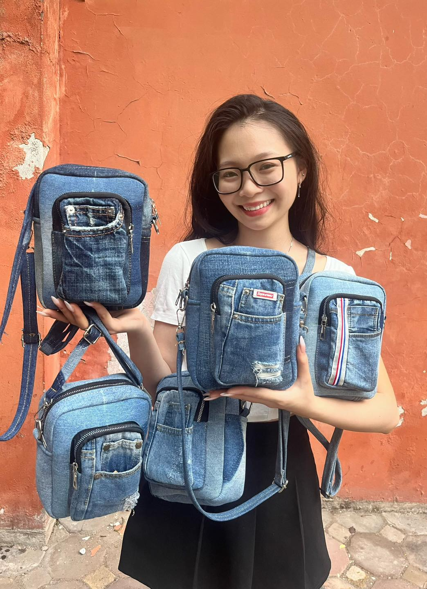
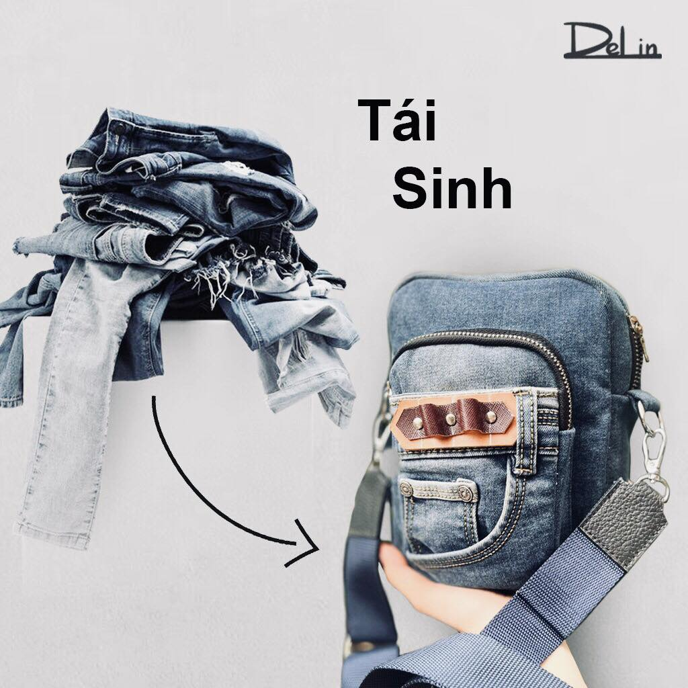
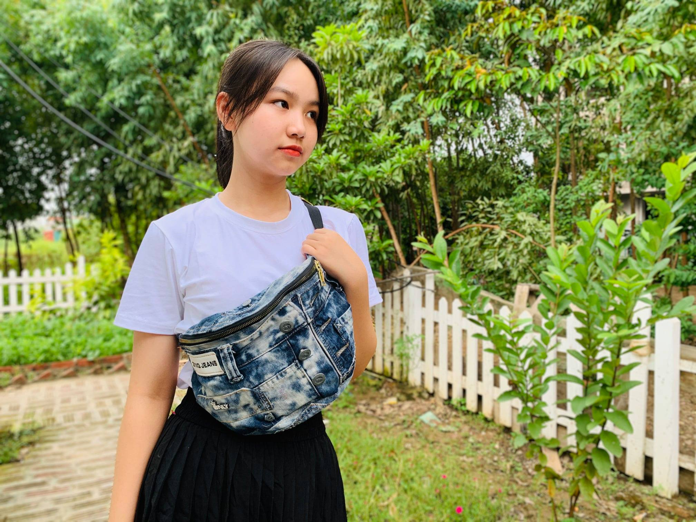
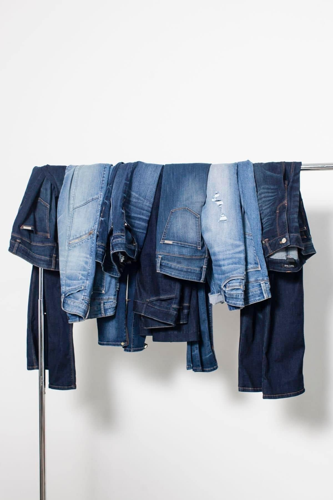

QUỲNH TRANG

Em nhận kéo dài Tuổi Đời của quần áo Jeans Cũ, Hỏng ạh!!! Mọi người đừng bỏ đi mang qua em Tái Chế lại đẹp lắm lun
Tái Chế từ những đồ Jeans Cũ, Hỏng mà mình bỏ đi Góp phần bảo vệ Môi Trường.
Mọi người cứ qua em, nhiều mẫu mã để lựa chọn: Mua Sẵn hoặc mang Quần Áo Cũ Hỏng qua em Tái Chế theo yêu cầu lun
YẾN NGUYỄN
Xin chào cả nhà !!!

Lại là mình đây, cô gái chuyên tái chế Jeans cũ.
Mình nhận được kha khá câu hỏi kiểu "Túi may từ jeans cũ thì có bị cũ và sờn không???
Và lời giải rất đơn giản, nếu các bạn chăm chỉ tháo những họa tiết trên chiếc jeans cũ, và tận dụng những phần vải tốt, không bị sờn, bạc màu, ố... và sau đó chắp ghép lại, tận dụng những họa tiết như túi quần, cạp quần... để tạo ra một sản phẩm mới xinh xắn và đạt chất lượng tốt.
Hãy tận dụng thời gian nghỉ dịch để #tái_chế_sáng_tạo giúp giảm thiểu rác thải và tạo ra sản phẩm mới ý nghĩa hơn nhé nhé
Vân Ly

Chào cả nhà thương yêu,
hiện dự án rất rất cần thêm đồ jean cũ cho bạn trẻ Hà Nội tham gia chiến dịch tái chế, để tạo ra các sản phẩm tái chế nhằm bán và gây quỹ vì trẻ em khó khăn.
Các bạn đã bắt tay vào phác thảo và chuẩn bị làm nhưng Jean cũ quyên góp được sau khi chia ra vẫn còn thiếu nhiều.
Em nhờ mọi người để tâm và cùng Team kêu gọi gấp rút cho các bạn với ạ.